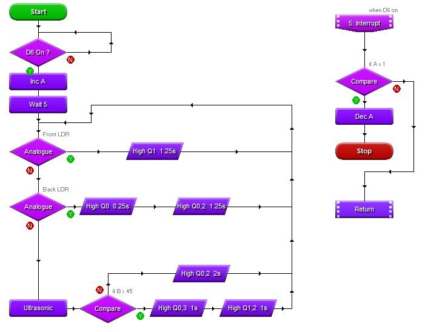

Technical Understanding 3
Table of Contents

1 How electronic systems offer functionality to design solutions
6.4c Demonstrate an understanding of what can be gained from interfacing electronic circuits with mechanical and pneumatic systems and components, such as:
i the ability to add electronic control as an input to mechanical or pneumatic
output
Watch the video below, it will show you the basics of electro-pneumatics.

ii the use of flow restrictors to control cylinder speed
To read more about flow restrictors and the many different types and how they work, click on this link.
iii the use of sensors to measure rotational speed, strain/force, distance.
There are a number of ways to measure rotational speed, the most common being a tachometer.
A tachometer (revolution-counter, tach, rev-counter, RPM gauge) is an instrument measuring the rotation speed of a shaft or disk, as in a motor or other machine. The device usually displays the revolutions per minute (RPM) on a calibrated analogue dial, but digital displays are increasingly common.
Other options include electro-magnetic, or LED to detector on a slotted shaft.
6.4d Demonstrate an understanding of networking and of communication protocols, such as:
i wireless devices, such as: RFID, NFC, Wi-Fi, bluetooth
Radio-frequency identification (RFID) uses electromagnetic fields to automatically identify and track tags attached to objects. The tags contain electronically stored information. Passive tags collect energy from a nearby RFID reader's interrogating radio waves. Active tags have a local power source (such as a battery) and may operate hundreds of meters from the RFID reader. Unlike a barcode, the tag need not be within the line of sight of the reader, so it may be embedded in the tracked object. RFID is one method for Automatic Identification and Data Capture (AIDC).
Near-field communication (NFC) is a set of communication protocols that enable two electronic devices, one of which is usually a portable device such as a smartphone, to establish communication by bringing them within 4 cm (1.6 in) of each other.
Wi-Fi (wireless fidelity) most commonly uses the 2.4 gigahertz (12 cm) UHF and 5.8 gigahertz (5 cm) SHF ISM radio bands. Anyone within range with a wireless modem can attempt to access the network; because of this, Wi-Fi is more vulnerable to attack (called eavesdropping) than wired networks. Wi-Fi Protected Access is a family of technologies created to protect information moving across Wi-Fi networks and includes solutions for personal and enterprise networks. Security features of Wi-Fi Protected Access constantly evolve to include stronger protections and new security practices as the security landscape changes.

Bluetooth is a wireless technology standard for exchanging data over short distances (using short-wavelength UHF radio waves in the ISM band from 2.4 to 2.485 GHz) from fixed and mobile devices, and building personal area networks (PANs). Invented by telecom vendor Ericsson in 1994, it was originally conceived as a wireless alternative to RS-232 data cables.
ii embedded devices
An embedded system is a computer system with a dedicated function within a larger mechanical or electrical system, often with real-time computing constraints. It is embedded as part of a complete device often including hardware and mechanical parts. Embedded systems control many devices in common use today.
iii smart objects
Smart Objects are layers that contain image data from raster or vector images, such as Photoshop or Illustrator files. Smart Objects preserve an image's source content with all its original characteristics, enabling you to perform nondestructive editing to the layer.
iv networking electronic products to exchange information.
Electronic data interchange (EDI) is the concept of businesses communicating electronically certain information that was traditionally communicated on paper. The two classic examples of such information are purchase orders and invoices. Standards for EDI exist to facilitate parties transacting such instruments without having to make special arrangements.
EDI has existed for more than 30 years, and there are many EDI standards (including X12, EDIFACT, ODETTE, etc.), some of which address the needs of specific industries or regions. It also refers specifically to a family of standards. In 1996, the National Institute of Standards and Technology defined electronic data interchange as "the computer-to-computer interchange of strictly formatted messages that represent documents other than monetary instruments. EDI implies a sequence of messages between two parties, either of whom may serve as originator or recipient. The formatted data representing the documents may be transmitted from originator to recipient via telecommunications or physically transported on electronic storage media." It distinguishes mere electronic communication or data exchange, specifying that "in EDI, the usual processing of received messages is by computer only. Human intervention in the processing of a received message is typically intended only for error conditions, for quality review, and for special situations. For example, the transmission of binary or textual data is not EDI as defined here unless the data are treated as one or more data elements of an EDI message and are not normally intended for human interpretation as part of online data processing.EDI can be formally defined as the transfer of structured data, by agreed message standards, from one computer system to another without human intervention.
6.4e Demonstrate an understanding of the basic principles of electricity, including:
i. voltage
Voltage, electric potential difference, electric pressure or electric tension (formally denoted ∆V or ∆U, but more often simply as V or U, for instance in the context of Ohm's or Kirchhoff's circuit laws) is the difference in electric potential between two points. The voltage between two points is equal to the work done per unit of charge against a static electric field to move a test charge between two points. This is measured in units of volts (a joule per coulomb); moving 1 coulomb of charge across 1 volt of electric potential requires 1 joule of work.
ii. current
An electric current is a flow of electric charge. In electric circuits this charge is often carried by moving electrons in a wire. It can also be carried by ions in an electrolyte, or by both ions and electrons such as in an ionised gas (plasma).
The SI unit for measuring an electric current is the ampere, which is the flow of electric charge across a surface at the rate of one coulomb per second. Electric current is measured using a device called an ammeter.
Electric currents cause Joule heating, which creates light in incandescent light bulbs. They also create magnetic fields, which are used in motors, inductors and generators.
The moving charged particles in an electric current are called charge carriers. In metals, one or more electrons from each atom are loosely bound to the atom, and can move freely about within the metal. These conduction electrons are the charge carriers in metal conductors.
iii. ohms law
Ohm's law states that the current through a conductor between two points is directly proportional to the voltage across the two points. Introducing the constant of proportionality, the resistance,one arrives at the usual mathematical equation that describes this relationship:
V = I X R
iv. power
Electric power is the rate, per unit time, at which electrical energy is transferred by an electric circuit. The SI unit of power is the watt, one joule per second.
Electric power is usually produced by electric generators, but can also be supplied by sources such as electric batteries. It is usually supplied to businesses and homes by the electric power industry through an electric power grid. Electric power is usually sold by the kilowatt hour (3.6 MJ) which is the product of power in kilowatts multiplied by running time in hours. Electric utilities measure power using an electricity meter, which keeps a running total of the electric energy delivered to a customer.
Electrical power provides a low entropy form of energy and can be carried long distances and converted into other forms of energy such as motion, light or heat with high energy efficiency.
2 How programmable devices and smart technologies provide functionality in system design
6.5a Demonstrate an understanding of how smart materials change the functionality of engineered products, such as:
i colour changes, shape-shifting, motion control, self-cleaning and self-healing.
For a full list of all the available smart materials, click on this Wikipedia link to read up on the above categories.
6.5b Demonstrate an understanding of how programmable devices are used to add functionality to products, relating to coding of and specific applications of programmable components, such as:
We use Circuit Wizard to complete all of the tasks below. You will have used the program to develop you own project, from storing data in a variable, to running the progra, in the Circuit Wizard virtual environment.
i. How they incorporate enhanced features that can improve the user experience and solve problems in system design
For example, you could design a robot vaccuum system that runs around a room in a random pattern, hitting walls and returning until all of the room is clean.
ii. How they use basic techniques for measuring, controlling, storing data and displaying information in practical situations
Microcontroller can store data in variables. The Genie microcontrollers store these values in locations labelled as letter A,B,C….
This could be used to build a drawer alarm, when the project is placed in a drawer, it could store the value of the analogue input (the light level) and then compare it until more light is present, thus setting off the alarm.
iii. Electronic prototyping platforms and interated development environments (IDE) for simulation in virtual environments
We can prototype most circuits needed in school using Circuit Wizard, these prototypes can then be tested in the virtual environment. You need to be careful, as this is a virtual environment, the components will not always act exactly as they woud in the 'real' world.
iv. The use of programmable components and microcontrollers found in products and systems such as robotic arms or cars
This would be the same as above, you will need to start using motors to control robotic arms.
Different types of motors are discussed earlier in principle 7. As a recap, these would usually be:
- Servo motors.
- Stepper motors.
As they have accurate control.
v. Creating flowcharts to describe processes and decisions within a process to control input and output components.
You have created many flowchart in Circuit Wizard, but you can create flowcharts to explain nearly any situation. Flowcharts are ways to graphically display a process.
Flowcharts display steps using the following blocks (there are mny more):
- Terminators
- Inputs/outputs
- Decision
- Process
- Directional arrows
